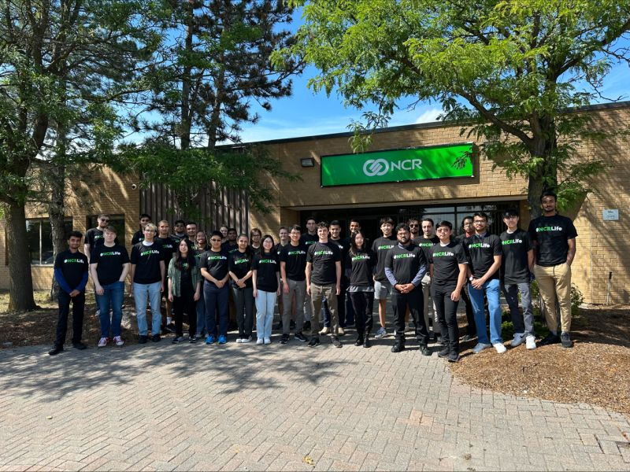

Introduction
This work term report is about the second 4 month term of my 8 month co-op term at NCR Voyix (formerly known as NCR). For the past 8 months I have been part of the Nexus, Core-Integration team. During my time on the team we have created an adapter, built a standardized library to be used for other spring-based adapters and provided fixes and updates to adapters in use. These adapters play an important role at NCR Voyix, as they are used by other teams to communicate with core banking systems provided to the company by financial institutions.
Information About The Employer
NCR Voyix, originally founded in 1884 selling cash registers, is the world's leading enterprise provider of software, hardware and services for banks, retailers, restaurants, small business and telecom & technology. When I first began my co-op in May 2023, the company was known as NCR. However, in October, NCR officially split into 2 companies, NCR Atleos and NCR Voyix (which my team is a part of).
Learning Goals
1) Improve Debugging Skills
After the initial 4 months of my co-op term, I had gained a solid understanding of our team's work and began receiving more tickets. I found debugging was a task that frequently was taking up a significant portion of my time at work and to increase the speed at which I'm able to complete the tickets I was assigned, I thought this would be a great skill to work on. To work towards this goal, I started picking up more bug related tickets to gain more practice as that's the best way to improve. I discovered a few techniques during this practice that I found were greatly increasing the speed at which I was able to find and fix the issue within the code. Additionally, I also asked around to my teammates during this process and got some tips and tricks from them, which I was quickly able to apply and practice on the bug tickets I worked on.
2) Improve Spring-boot and Java knowledge
Since this was my second 4 month term at NCR Voyix on the same team, I took this term to try and really get a deep understanding of backend development, with a specific focus on Java and Spring-boot. To improve my knowledge of both Spring-boot and Java, I began with my usual method of learning and practiced as well as used the crazy amount of projects I had access to at NCR Voyix to read more code. While I would read through the projects, I would look to see how it was structured, how different classes were designed and tried to find things that confused me, as I knew if this was the case there was something to learn and I would start doing my research. During this time, a teammate recommended an online course on Java performance and memory management which I began taking. This course taught me a lot about when to use different data structures, the inner workings of Java and the JVM. This new information I gained from this course allowed me to find places in our own work that improvements could be made as well as sparked discussions where I could learn even more from my teammates.
3) Improve my ability to participate in technical discussions
Since our team was working on the development of a new adapter, we were frequently discussing with our senior developers and architects outside our team to ensure we're following best practices. Given that the new adapter was written in Java and Spring-boot these discussions both helped me work towards my previous goal as well as my previous goal helped me work towards this goal as it gave me a better understanding of the topics of discussion. Additionally, I would prepare before the calls by doing my own research on the topics and if we're deciding between a few options looking into each and trying to think about how each will be able to suit our needs and if there's any functionality that would be missing. This preparation and the knowledge I gained about Java and Spring-boot throughout the term allowed me to achieve my goal and contribute meaningful information to the discussions and helped to ensure that our team was building the adapter in the best way possible.
My Role At The Company
- Worked on the Nexus Core-Integration team. We were a team of 8 developers split between the Waterloo office and the head office in Atlanta.
- Developed RESTful APIs in Java utilizing Spring-boot framework. These APIs integrated with core banking systems provided by the financial institutions we worked with.
- Contributed to a standardized library for future Spring-based adapters to decrease adapter time in development, while also helping to enforce standards.
- Developed integration and unit tests for multiple adapters to help ensure code reliability.
- Troubleshooted various bugs and provided fixes for adapters in both development and production.
- Contributed to the recruitment of incoming interns by reviewing resumes and assisting with interviewing candidates.
Conclusion
As the final 4 months of my co-op at NCR Voyix has come to an end, I can look back and see how much I've grown as a developer. Working as a co-op at NCR Voyix has been an amazing opportunity and it far exceeded the expectations I had set before the placement. During my time I got to work with my amazing team members that were always there anytime I had a question or wanted to play ping pong! I also got to meet many other incredible co-workers including other co-ops and full timers making many new friends while there. The past 8 months were an amazing experience, and I'm very excited for my next co-op!
List of Technologies Used
Improved Technologies
- Java
- Docker
- Git
- JUnit
New Technologies
- Spring Boot
- Maven
- Kubernetes
- Helm
- Jenkins
- GCP
- Swagger
- Shell Scripts
- Mockito
- Postman
- Cucumber
- Aquasec/Coverity/Whitesource